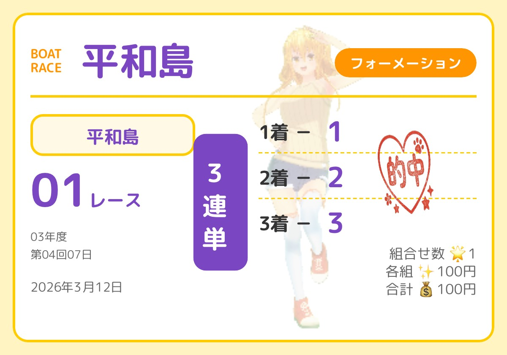
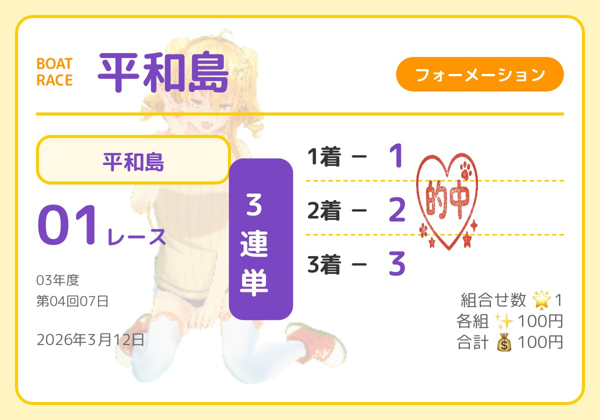
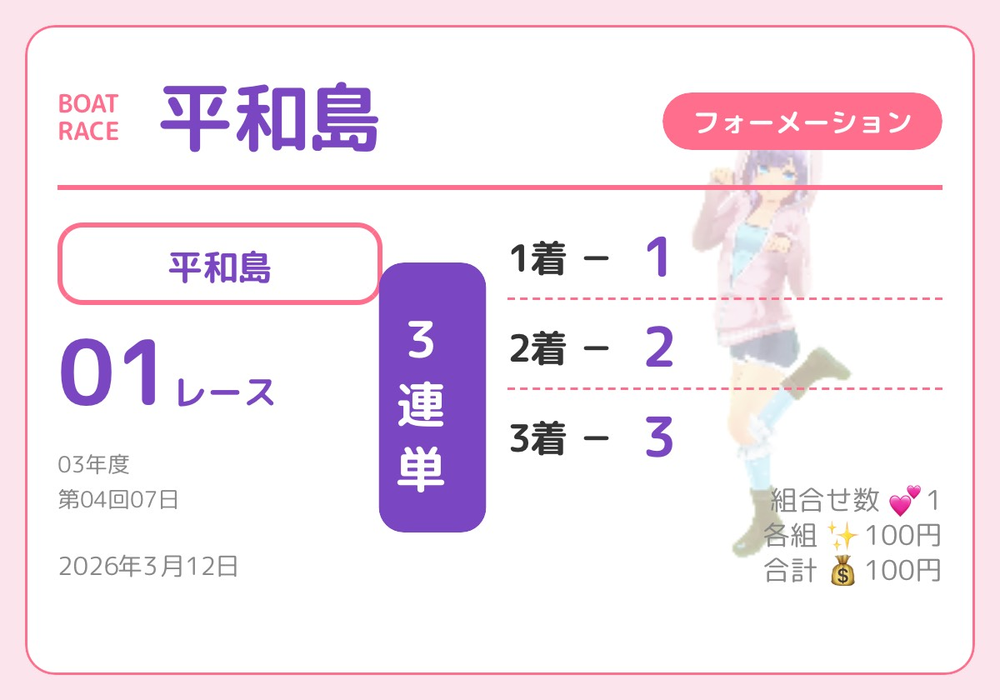
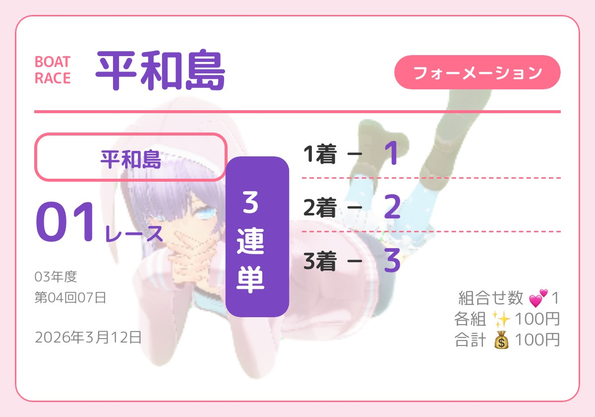

Standard Generation (基本ツール)
KIINA

キイナオリジナル1⃣
最大3点までの1着軸から広げる、最も汎用性の高いツールです。
#穴狙い #高配当 #SNS共有KIINA

キイナオリジナル2⃣
的中と配当のバランスを追求した、キイナ流のフォーメーション設定。
#穴狙い #中穴 #万舟KIINA

キイナオリジナル3⃣
一発逆転を狙うための超攻撃的スタイル。万舟報告お待ちしています！
#超攻撃的 #万舟特化 #SNS映えHATSUNE

初音オリジナル1⃣
的中率を重視する方や、女子戦・イン戦の堅い予想に最適。
#的中重視 #安定型 #女子戦HATSUNE

初音オリジナル2⃣
2連単の魅力を最大限に活かす、絞り込みに特化した設定です。
#少点数 #厚く張る #コツコツ的中HATSUNE
初音オリジナル3⃣
初心者の方でも使いやすい、シンプルで直感的な操作感。
#初心者歓迎 #直感操作 #女子戦